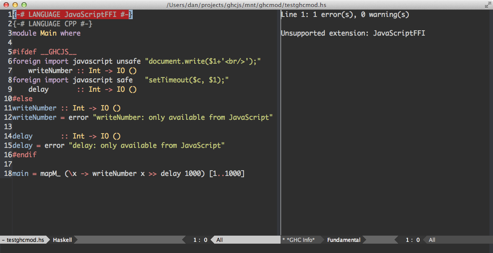
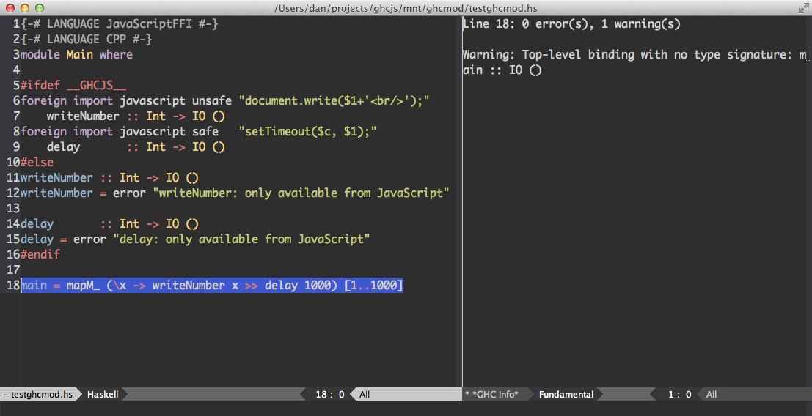

Vado and new build system
Table of Contents
In this post I would like to give you an update on the new GHCJS build system and vado - a piece of software for running programs on vagrant VMs (or any other ssh server, actually), both projects I've contributed briefly to.
1 New build system
Old build system for ghcjs was a little bit messy. Basically, it was just one Puppet configuration file that contained a hardcoded shell script as a resource that was written to the home directory and executed. I decided to clean it up a notch and take more of a Puppet approach to the whole thing.
And since the errors are now now output yielded onto the screen it's easy to see which stage the build is going through and if anything goes wrong you see an error trace for the current stage.
You can find the new set of build script on the GitHub: https://github.com/ghcjs/ghcjs-build
The prebuilt version has also been updated by Luite Stegeman.
2 Vado
2.1 Vado intro
Hamish Mackenzie and I have been working on vado - a quick way to run commands on a remote ssh server. Just mount the directory you want to run the command in using sshfs, in that directory (or its subdirectory) run vado like this:
vado ls -l
vado will run 'mount' to identify the user account, server name and the remote directory to run the command in. It will then run ssh to connect to the server and run the command.
You can also pass ssh options like this:
vado -t htop
This tells vado to pass -t to ssh (forces pseudo-tty allocation and makes programs like vim and htop work nicely).
Further I will explain how to set up vado for multiple remote servers/sshfs mount points and how to develop Haskell projects on a remote server/VM nicely using Emacs and ghc-mod.
2.2 .vadosettings
Vado is not tied to vagrant, but can be used with it and is faster
than vagrant ssh. If the user and host detected in mount are
specified in the ~/.vadosettings file, then the specified key and
port will be used.
The contents of the ~/.vadosettings file is basically a Haskell
list of MountSettings datastructures and we use standard Read and
Show type-classes for serialization.
MountSettings datastructure is defined as following:
-- | Mount point settings data MountSettings = MountSettings { sshfsUser :: Text , sshfsHost :: Text , sshfsPort :: Int , idFile :: FilePath } deriving (Show, Read)
If the file is not present or incorrectly formatted then the default settings for vagrant will be used:
- User: vagrant
- Host: 127.0.0.1
- Port: 2222
- Key file:
~/.vagrant.d/insecure_private_key
2.2.1 Example .vadosettings file
An example settings file might look like this:
[ MountSettings { sshfsUser = "vagrant" , sshfsHost = "localhost" , sshfsPort = 2222 , idFile = "/Users/dan/.vagrant.d/insecure_private_key" }, MountSettings { sshfsUser = "admin" , sshfsHost = "server.local" , sshfsPort = 2233 , idFile = "/Users/dan/keys/local_server_key" } ]
2.3 Vamount
Of course, using vado requires mounting the sshfs before hand. But
it gets tedious typing out
sshfs vagrant@localhost:/home/vagrant ../vm/ -p2222 -reconnect,defer_permissions,negative_vncache,volname=ghcjs,IdentityFile=~/.vagrant.d/insecure_private_key
every time. A little tool called vamount which is bundled together
with vado can be used for mounting remote filesystems based on
~/.vadosettings file.
You can use it like this:
vamount [ssh options] remote_path [profile #]
The remote_path from the remote server specified in the
~/.vadosettings file under number [profile #] will be mounted in the
current directory using sshfs.
The profile number count starts from 1. If the [profile #] is absent or is 0 then the default (vagrant) configuration will be used.
2.4 Vado and ghc-mod
ghc-mod is a backend designed command to enrich Haskell programming on editors like Emacs and Vim and it also features a front-end for Emacs as a set of elisp scripts. It's a really cool piece of software and if you have not tried it yet I highly recommend you to invest into installing and using it.
What we would like, however, is to edit files on the mounted filesystem using Emacs on the host machine, but run ghc-mod inside the VM. Well, firstly, for that we need to install ghc-mod both on our host machine and on the VM.
While installing ghc-mod on the host machine running the latest haskell-platform is pretty straightforward it is harder to do so on the VM running GHC 7.7 due to the fact that many libraries are not ready for GHC 7.7 and base 4.7 yet. We have to resort to installing most of the things from source.
# run this on the guest machine mkdir ghcmod && cd ghcmod # patching and installing hlint darcs get http://community.haskell.org/~ndm/darcs/hlint/ cd hlint wget http://co-dan.github.io/patched/making-hlint-work-with-base-4_7.dpatch darcs apply making-hlint-work-with-base-4_7.dpatch cabal install cd .. # patching installing convertible cabal unpack convertible cd convertible* wget http://co-dan.github.io/patched/convertible.patch patch -p1 Data/Convertible/Utils.hs convertible.patch cabal install cd .. # installing ghc-syb-utils git clone https://github.com/co-dan/ghc-syb.git cd ghc-syb/utils/ cabal install cd .. # finally getting and installing ghc-mod git clone https://github.com/co-dan/ghc-mod.git cd ghc-mod cabal install
Ghc-mode itself uses GHC Api extensively so it's no surprise we have to change at least some code. Now that we have installed ghc-mod on the guest VM we need to set up our host's Emacs configuration to communicate properly with the VM. First of all put this in your Emacs config:
(setq load-path (cons "~/Library/Haskell/ghc-7.6.3/lib/ghc-mod-2.0.3/share" load-path)) (autoload 'ghc-init "ghc" nil t) (add-hook 'haskell-mode-hook (lambda () (ghc-init))) ;; (setq ghc-module-command "ghc-mod") (setq ghc-module-command "~/vado-ghc-mod.sh")
~/vado-ghc-mod.sh should contain the following:
#!/bin/bash VADO=/Users/dan/Library/Haskell/bin/vado LOCAL_PATH=/Users/dan/projects/ghcjs/mnt/ REMOTE_PATH=/home/vagrant/ cd $LOCAL_PATH $VADO -t ghc-mod ${@//$LOCAL_PATH/$REMOTE_PATH} | sed "s,$REMOTE_PATH,$LOCAL_PATH,g"
I know that it's a hack, but it does work and I guess that's what shell scripts are for ;)
Now go to ~/.bashrc on the guest machine and make sure that the
PATH variable is set correctly:
PATH=/home/vagrant/ghcjs/bin:/home/vagrant/.cabal/bin:/home/vagrant/ghc/bin:/home/vagrant/jsshell:/home/vagrant/node-v0.10.10-linux-x86/bin:$PATH # PATH is set *before* this line: [ -z "$PS1" ] && return # <snip>
And that's it, you should be done!
Before:  After: 
3 Conclusion and future work
We've seen how a small but useful tool vado can make our life easier if
we want to develop Haskell projects on a remote server or on a
virtual machine. You can get Vado from GitHub: https://github.com/hamishmack/vado
Next week we are planning on realeasing our first version of interactive-diagrams pastesite (not going to be very interactive though) and writing out its security model.
Meanwhile check Luite's post on using Sodium FRP library for creating Functional Reactive Web interfaces. It's astonishing how easily you can just get a FRP library, compile to JavaScript and make nifty web apps with it.